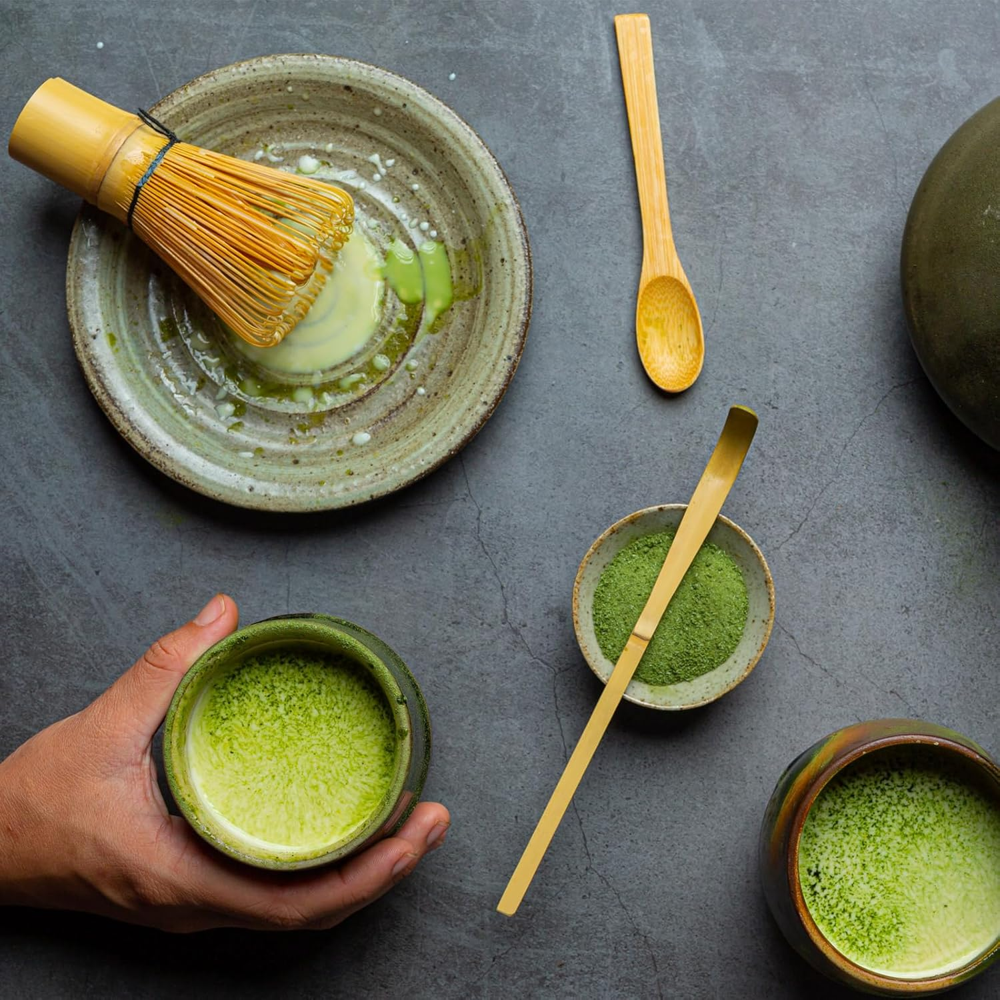
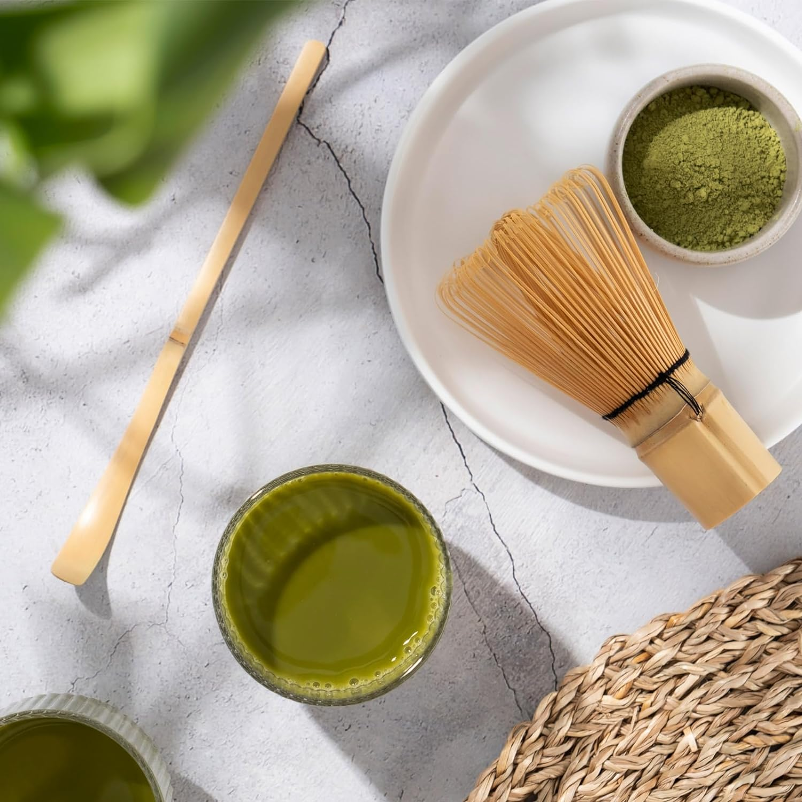
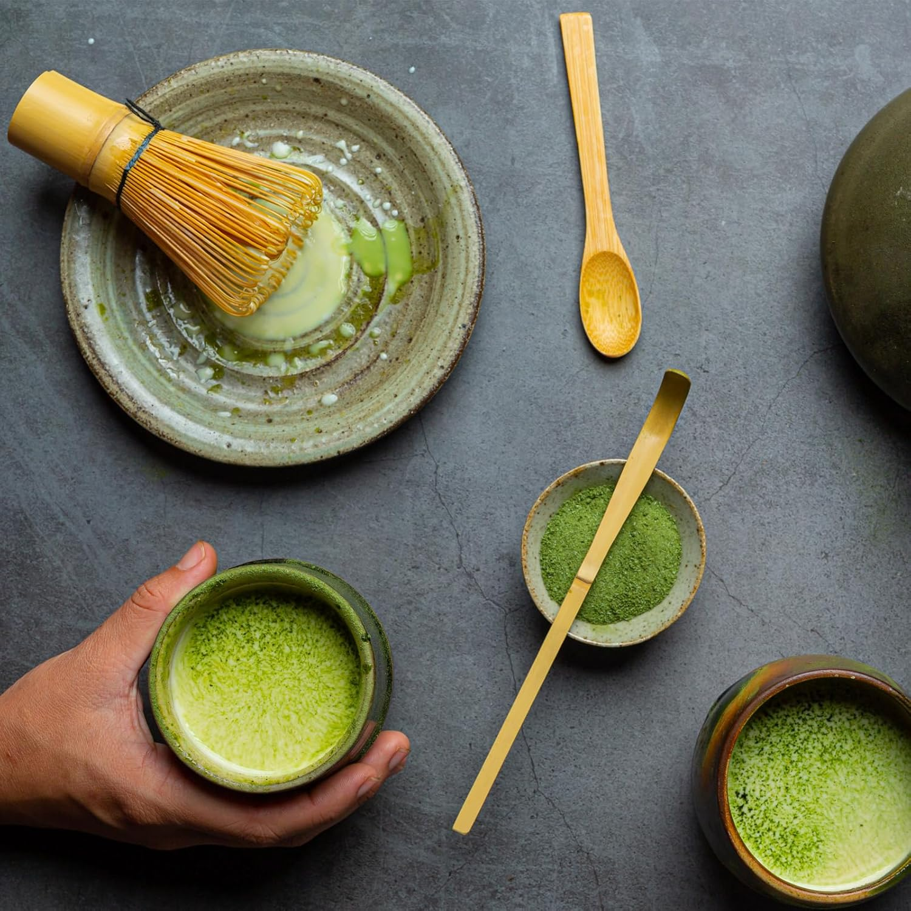
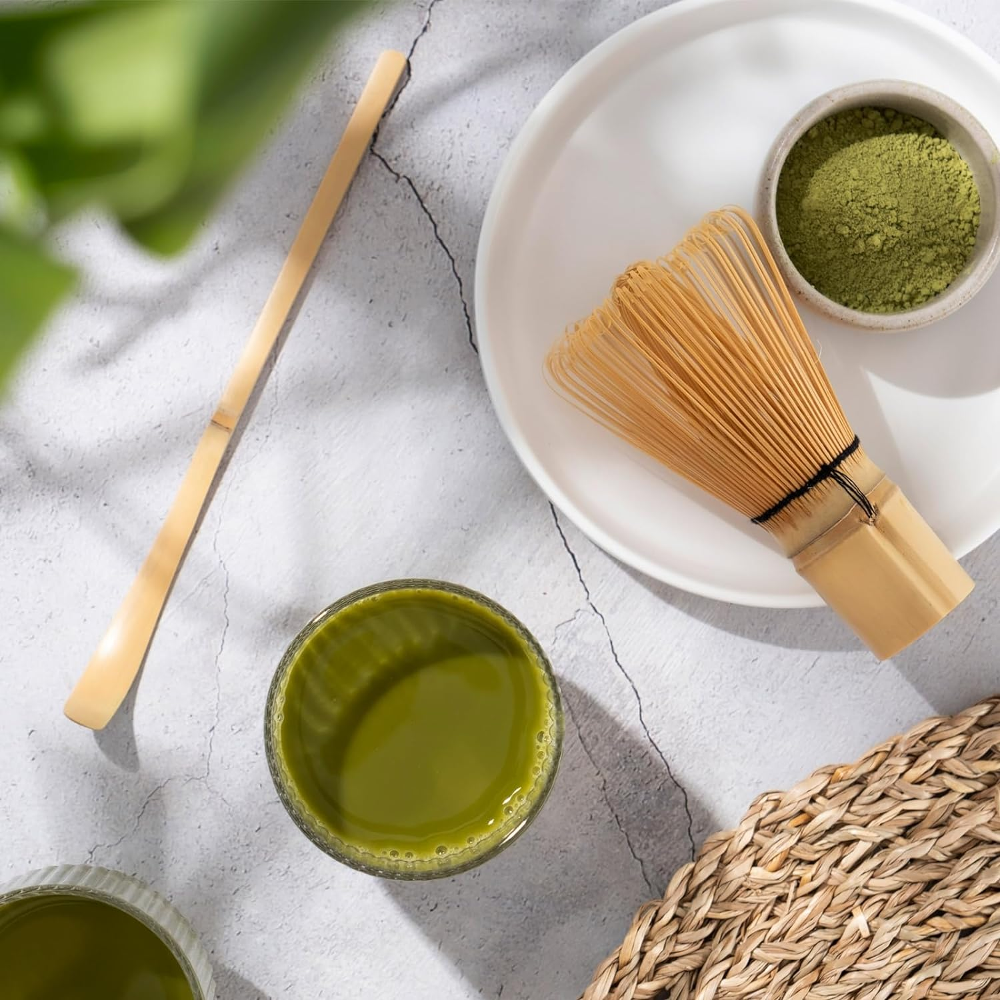

L'histoire du Thé Matcha
Le thé matcha, une poudre de thé vert finement moulue, a une histoire millénaire qui remonte à plus de 1 000 ans en Chine. À l'origine, il était consommé par les moines bouddhistes lors de leurs méditations, car il permettait de rester alerte tout en favorisant la concentration.Le matcha a été introduit au Japon au XIIe siècle, où il est rapidement devenu un élément central de la culture japonaise, notamment dans le cadre de la cérémonie du thé, ou "chanoyu". Au fil des siècles, la production du matcha s'est perfectionnée. Le thé est cultivé à l'ombre, ce qui augmente la teneur en chlorophylle et en antioxydants. Les feuilles sont ensuite récoltées à la main, cuites à la vapeur pour éviter l'oxydation, séchées puis moulues en une fine poudre. Cette méthode artisanale donne au matcha ses caractéristiques uniques : une saveur umami riche et une couleur verte vibrante.
Aujourd’hui, le matcha est prisé non seulement pour ses bienfaits pour la santé, grâce à sa forte concentration en antioxydants, vitamines et minéraux, mais aussi pour son goût raffiné et sa polyvalence. Que ce soit dans une simple tasse de thé, une latte, un smoothie ou même en pâtisserie, le matcha séduit par sa capacité à apporter énergie, bien-être et sérénité. Notre sélection de thés matcha est soigneusement choisie pour vous offrir une expérience authentique, en vous permettant de savourer toute la richesse de cette tradition ancestrale tout en profitant de ses bienfaits modernes.
Les bienfaits du Thé Matcha :
Riche en antioxydants
Le thé matcha est riche en antioxydants puissants qui protègent votre corps.Améliore la concentration et l'attention
Il aide à maintenir une attention et une concentration soutenues grâce à la L-théanine.Détoxifie l'organisme
Le matcha aide à éliminer les toxines de votre corps et à améliorer votre bien-être.Stimule le métabolisme
Le matcha stimule le métabolisme et favorise la combustion des graisses.Soutient le système immunitaire
Riche en vitamines et minéraux, le matcha aide à renforcer votre système immunitaire.Favorise la santé cardiaque
Il contribue à la réduction des risques cardiovasculaires grâce à ses effets bénéfiques. 



Matcha Tea :
Matcha Tea c'est l'histoire de trois amis réunis autour d'une passion commune : le thé matcha. Au-delà du phénomène de mode dont le thé matcha fait l'objet, nous avions à cœur de créer une entreprise à notre image, basée sur l'innovation et la proposition de produits en adéquation avec chaque mois de l'année. Nous vous proposons de découvrir ouredécouvrir le matcha d'une nouvelle façon avec nos offres inédites mais limitées tout au long de l'année.Ainsi, chaque mois, nous mettons un point d'honneur à explorer de nouvelles recettes, des combinaisons inédites et des associations avec des produits frais, locaux ou exotiques,toujours en harmonie avec les saisons. Que ce soit un matcha aux agrumes rafraîchissants en été, un mélange épicé réconfortant en automne ou une infusion florale en hiver,notre objectif est de vous offrir une expérience unique, qui éveille les sens et ravit le palais.
Notre aventure est bien plus qu'une simple passion pour le thé : c’est un voyage partagé à travers les saisons, un retour aux racines de la nature, et un véritable lien d'amitiéet de partage autour de la culture du matcha. Nous espérons que chaque tasse de matcha que nous vous proposons soit un moment d’évasion, de découverte et de plaisir.
Nos Valeurs Fondamentales
Nous évoluons chaque jour autour de 4 valeurs fondamentales : la transparence, l’authenticité ainsi que la durabilité & le respect de l’environnement. Nous mettons un point d’honneur à créer des liens forts avec nos clients pour une relation de proximité et de confiance, inscrite dans le temps.
Transparence
La transparence est au cœur de notre démarche. Nous croyons en une communication claire et honnête avec nos clients.
Authenticité
Nous valorisons l'authenticité dans toutes nos actions. Nos produits et services sont conçus pour être fidèles à nos engagements.
Durabilité
Nous avons à cœur de promouvoir des pratiques durables, respectueuses de l'environnement, et de réduire notre empreinte écologique.
Respect de l'Environnement
Nous nous engageons à respecter et préserver l'environnement à travers des initiatives concrètes et responsables.